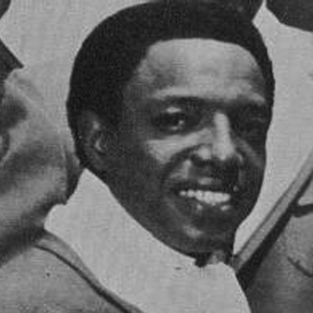

Paul Williams
Paul Williams (July 2, 1939 – August 17, 1973) was an American baritone singer and choreographer. Williams is noted for being one of the founding members and original lead singer of the Motown group The Temptations. Along with David Ruffin, Otis Williams (no relation), and fellow Alabamians Eddie Kendricks and Melvin Franklin, Williams was a member of The Temptations during the "Classic Five" period. Personal problems and failing health forced Williams to retire in 1971. He committed suicide two years later.Early years
Paul Williams was born and raised in Birmingham, Alabama. He met his lifelong best friend Eddie Kendricks during their grade school years; supposedly, the two first encountered each other in a fistfight after Williams dumped a bucket of mop water on Kendricks. The two eventually became good friends; both boys shared a love of singing, and sang in their church choir together. As teenagers, Williams, Kendricks, and their friends Kel Osbourne and Willie Waller performed in a secular singing group known as The Cavaliers, with dreams of making it big in the music industry. In 1957, Williams, Kendricks, and Osbourne left Birmingham to start careers, leaving Waller behind. Now known as The Primes, the trio moved to Cleveland, Ohio, and eventually found a manager in Milton Jenkins, who moved the group to Detroit, Michigan. Although The Primes never recorded, they were successful performers, and even launched a spin-off female group called The Primettes, who later became The Supremes.
In 1960, Kel Osbourne moved to California, and the Primes disbanded. Kendricks returned to Alabama, but visited Paul in Detroit shortly after. While on this visit, he and Paul had learned that Otis Williams, head of a rival Detroit act known as The Distants, had two openings in his group's lineup. Paul Williams and Kendricks joined Otis Williams, Melvin Franklin, and Elbridge Bryant to form The Elgins, who signed to the local Motown label in 1961, after first changing their name to The Temptations.